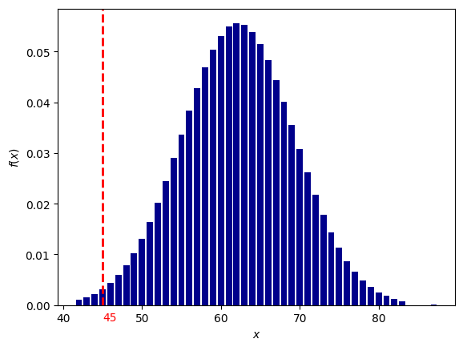
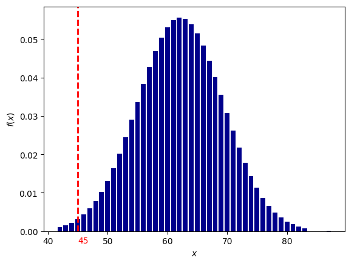

Если вы смотрите YouTube канал или Twitch стрим популярного видеоблоггера и дата его рождения общеизвестна - сообщите эту информацию.
Полученные данные будут собираться на спец. сайте.
Фазы исследования:
1. Сбор статистики
2. Корректировка и анализ
3. Выводы
Ход исследования:
1. Сбор данных

2-4. Подсчет аспектов / генерация случайных дат рождений
Комментарий к таблице:
5. Поиск отклонений (расчет вероятности)
Расчет вероятности осуществляется стандартными методами для нормального распределения.
Для нашего примера из таблицы:
имеем величины: 57,56,57,59,62,58,59,73
вычисляем среднее значение (мат. ожидание):
вычисляем среднее арифметическое квадратов отклонений (дисперсию):
берем корень и получаем стандартное отклонение (сигма):
теперь мы можем посчитать вероятность получения указанного количества аспектов по формуле Лапласа:
Например, какая вероятность, что искомое значение (сумма аспектов "Квадратура Марс-Плутон (угловое расстояние между Марсом и Плутоном 90 градусов)" в датах рождения 600 влоггеров) будет находиться в диапазоне от 82 до 84?
Подставляем в формулу значения: x1=82, x2=84, σ=5, α=60, получаем:
Итоговая вероятность получилась равной 0,000029 или 1 / 34482 !
Процесс вычисления вероятности можно автоматизировать с помощью простейшей программы на языке Python:
Для более равномерного распределения случайных дат рождений использовался подсчет количества аспектов "Квадратура Марс-Плутон" не в 8 случайных выборках по 600 дат, а в 1000:
(на графике - нормальное распределение (колоколообразная кривая с пиком в центре, распределение Гаусса-Лапласа) сумм аспектов "Квадратура Марс-Плутон" в 1000 выборках по 600 случайных дат рождений, красная пунктирная линия - количество аспектов "Квадратура Марс-Плутон" в датах рождения 600 исследуемых влоггеров.)
Что показывает этот график?
На графике отображено насколько маловероятно получить значение 83, случайно генерируя даты рождений (число лежит практически за пределами графика - более 4-х стандартных отклонений (сигм)).
Небольшое отступление: что такое нормальное распределение?
Представьте, что вы бросаете два игральных кубика, каждый с шестью пронумерованными сторонами от 1 до 6.
Результаты экспериментов записываете в таблицу; допустим, вы делаете 100 бросков.
У вас получаются записи с номером эксперимента и результатом:
1 - 3
2 - 7
3 - 5
4 - 7
5 - 10
...
100 - 5
Далее вы группируете выпавшие значения; какие-то значения будут выпадать чаще, какие-то реже.
Если отобразить эти значения на графике, то вы увидите колоколообразный график - нормальное распределение.
Для примера, как выглядит величина, которая не маловероятна -"Тригон Меркурий-Марс" (угловое расстояние между Меркурием и Марсом 120 градусов):
Вероятность 0.06 или 1 / 15
Можно подумать, что это из за того, что Меркурий -быстрая планета и это влияет на частоту выпадания аспекта, но взглянем на аспект "Секстиль Меркурий-Венера" (угловое расстояние между Меркурием и Венерой 60 градусов):

(Вероятность 0.00248 или 1 / 402)
Варианты обьяснения полученных аномалий:
Возраст влоггеров миллионников:
Из них 39 человек (1994-1996) родились в период 1994-2000, когда данный аспект встречался в 2-3 раза чаще чем обычно (52-82 дня в году, вместо 22-30 в другие годы):
Астрологическое обьяснение:
Влоггеры часто рождались в период времени, когда наблюдалась квадратура Марса к Плутону (во внимание не берется ни в каких знаках находились указанные планеты, ни возможное влияние целого комплекса аспектов или других астрологических критериев).
Не астрологическое обьяснение:
Итоговая таблица по аномалиям:
(вероятность расчитана для 8 выборок по 600 дат; кликните на аспект, чтобы посмотреть вероятность для 1000 выборок по 600 дат)
Max - аспект встречается аномально часто.
Min - аспект встречается аномально редко.
вероятность 1/1000 и менее (за пределами нормального распределения):
Благодарю всех, кто принял участие в эксперименте и присылал ссылки на каналы влоггеров!
update: 23.06.2024
- Сбор данных (собрано 600 влоггеров с подписчиками более 1 млн.).
- Подсчет всех возможных аспектов в датах их рождения (1961-2002 годы).
- Генерация случайных дат рождений в диапазоне 1961-2002 годы (на каждый год столько дат, сколько было дней рождений влоггеров в указанном году).
- Подсчет всех возможные аспектов в сгенерированных датах рождения (1961-2002 годы).
- Поиск отклонений между случайными датами рождений и датами рождений влоггеров из выборки, подсчет вероятности выпадения каждого аспекта.
1. Сбор данных
В ходе сбора статистики выяснилось, что влоггеров миллионников огромное множество, в выборку попала лишь малая часть: США, Россия, Венесуэла, Испания, Великобритания. По каждому знаку было добавлено по 50 влоггеров имеющих более 1 млн. подписчиков.
2-4. Подсчет аспектов / генерация случайных дат рождений
| Аспект | Значение | Шум1 | Шум2 | Шум3 | Шум4 | Шум5 | Шум6 | Шум7 | Шум8 | Шум макс. | Шум мин. | Шум средн. | Сигнал |
| Квадратура Марс-Плутон | 83 | 57 | 56 | 57 | 59 | 62 | 58 | 59 | 73 | 73 | 56 | 60 | 10 |
Комментарий к таблице:
- Значение - количество аспектов в датах рождения влоггеров
- (Шум1 - Шум8) - количество аспектов в случайно сгенерированных датах рождения (8 выборок по 600 дат)
- Шум макс. - максимальное значение
- Шум мин. - минимальное значение
- Шум средн. - среднее арифметическое (Шум1-Шум8)
- Сигнал - разница между колонкой Значение и колонкой Шум макс. (если Значение превышает максимальное) или Шум мин. (Значение меньше минимального)
5. Поиск отклонений (расчет вероятности)
Расчет вероятности осуществляется стандартными методами для нормального распределения.
Для нашего примера из таблицы:
имеем величины: 57,56,57,59,62,58,59,73
вычисляем среднее значение (мат. ожидание):
вычисляем среднее арифметическое квадратов отклонений (дисперсию):
берем корень и получаем стандартное отклонение (сигма):
теперь мы можем посчитать вероятность получения указанного количества аспектов по формуле Лапласа:
Например, какая вероятность, что искомое значение (сумма аспектов "Квадратура Марс-Плутон (угловое расстояние между Марсом и Плутоном 90 градусов)" в датах рождения 600 влоггеров) будет находиться в диапазоне от 82 до 84?
Подставляем в формулу значения: x1=82, x2=84, σ=5, α=60, получаем:
Итоговая вероятность получилась равной 0,000029 или 1 / 34482 !
Процесс вычисления вероятности можно автоматизировать с помощью простейшей программы на языке Python:
# Подключаем библиотеку SciPy from scipy import stats # Задаем параметры: loc=60 - среднее значение, scale=5 - стандартное отклонение (сигма) calc = stats.norm(loc=60, scale=5) # Устанавливаем значение для которого ищется вероятность и выводим результат print(calc.pdf(83))
Для более равномерного распределения случайных дат рождений использовался подсчет количества аспектов "Квадратура Марс-Плутон" не в 8 случайных выборках по 600 дат, а в 1000:
Что показывает этот график?
На графике отображено насколько маловероятно получить значение 83, случайно генерируя даты рождений (число лежит практически за пределами графика - более 4-х стандартных отклонений (сигм)).
Небольшое отступление: что такое нормальное распределение?
Представьте, что вы бросаете два игральных кубика, каждый с шестью пронумерованными сторонами от 1 до 6.
Результаты экспериментов записываете в таблицу; допустим, вы делаете 100 бросков.
У вас получаются записи с номером эксперимента и результатом:
1 - 3
2 - 7
3 - 5
4 - 7
5 - 10
...
100 - 5
Далее вы группируете выпавшие значения; какие-то значения будут выпадать чаще, какие-то реже.
Если отобразить эти значения на графике, то вы увидите колоколообразный график - нормальное распределение.
Для примера, как выглядит величина, которая не маловероятна -"Тригон Меркурий-Марс" (угловое расстояние между Меркурием и Марсом 120 градусов):
Можно подумать, что это из за того, что Меркурий -быстрая планета и это влияет на частоту выпадания аспекта, но взглянем на аспект "Секстиль Меркурий-Венера" (угловое расстояние между Меркурием и Венерой 60 градусов):
Варианты обьяснения полученных аномалий:
Разберем более подробней на примере аспекта "Квадратура Марс-Плутон", за счет чего произошло отклонение.
83 человека из 600 имеют указанный аспект:
Из них 39 человек (1994-1996) родились в период 1994-2000, когда данный аспект встречался в 2-3 раза чаще чем обычно (52-82 дня в году, вместо 22-30 в другие годы):
Астрологическое обьяснение:
Влоггеры часто рождались в период времени, когда наблюдалась квадратура Марса к Плутону (во внимание не берется ни в каких знаках находились указанные планеты, ни возможное влияние целого комплекса аспектов или других астрологических критериев).
Не астрологическое обьяснение:
- Эффект возраста влоггера. Большинство влоггеров имеют такой возраст, который, в данный период времени, попадает на такой момент времени, при котором "Квадратура Марс-Плутон" встречается в два раза чаще обычного. Проверкой данного предположения может быть повторное исследование, проведенное через несколько десятков лет.
- Эффект выборки. Мало данных, выборка была нерепрезентативна или сфабрикована, некорректная генерация случайных дат рождений и т. п. Проверкой данного предположения может быть независимое исследование.
Итоговая таблица по аномалиям:
(вероятность расчитана для 8 выборок по 600 дат; кликните на аспект, чтобы посмотреть вероятность для 1000 выборок по 600 дат)
Max - аспект встречается аномально часто.
Min - аспект встречается аномально редко.
вероятность 1/1000 и менее (за пределами нормального распределения):
Квадратура Марс-Плутон
вероятность от 1/200 до 1/1000: Секстиль Меркурий-Марс
вероятность для 1000 выборок: 1/3702 (0.0002701069)
Оппозиция Солнце-Уран
вероятность для 1000 выборок: 1/487 (0.0020519080)
Оппозиция Солнце-Сатурн
вероятность для 1000 выборок: 1/265 (0.0037621053)
Тригон Марс-Сатурн
вероятность для 1000 выборок: 1/263 (0.0037968748)
Секстиль Меркурий-Венера
вероятность для 1000 выборок: 1/392 (0.0025449610)
Секстиль Марс-Юпитер
вероятность для 1000 выборок: 1/97 (0.0102597410)
Секстиль Венера-Уран
вероятность для 1000 выборок: 1/154 (0.0064577678)
Квадратура Венера-Марс
вероятность для 1000 выборок: 1/318 (0.0031364830)

Соединение Меркурий-Нептун

вероятность для 1000 выборок: 1/23 (0.0426045220)
вероятность от 1/200 до 1/1000: Секстиль Меркурий-Марс
вероятность для 1000 выборок: 1/103 (0.0096406470)
Секстиль Солнце-Сатурн
вероятность для 1000 выборок: 1/185 (0.0053960988)
Оппозиция Солнце-Юпитер
вероятность для 1000 выборок: 1/140 (0.0071204133)
Секстиль Юпитер-Уран
вероятность для 1000 выборок: 1/74 (0.0134865655)
Квадратура Луна-Венера
вероятность для 1000 выборок: 1/102 (0.0097982360)
Секстиль Сатурн-Нептун
вероятность для 1000 выборок: 1/32 (0.0306059657)
Секстиль Уран-Плутон
вероятность для 1000 выборок: 1/813 (0.0012290935)
Оппозиция Меркурий-Сатурн
вероятность для 1000 выборок: 1/66 (0.0149475595)
Благодарю всех, кто принял участие в эксперименте и присылал ссылки на каналы влоггеров!
update: 23.06.2024